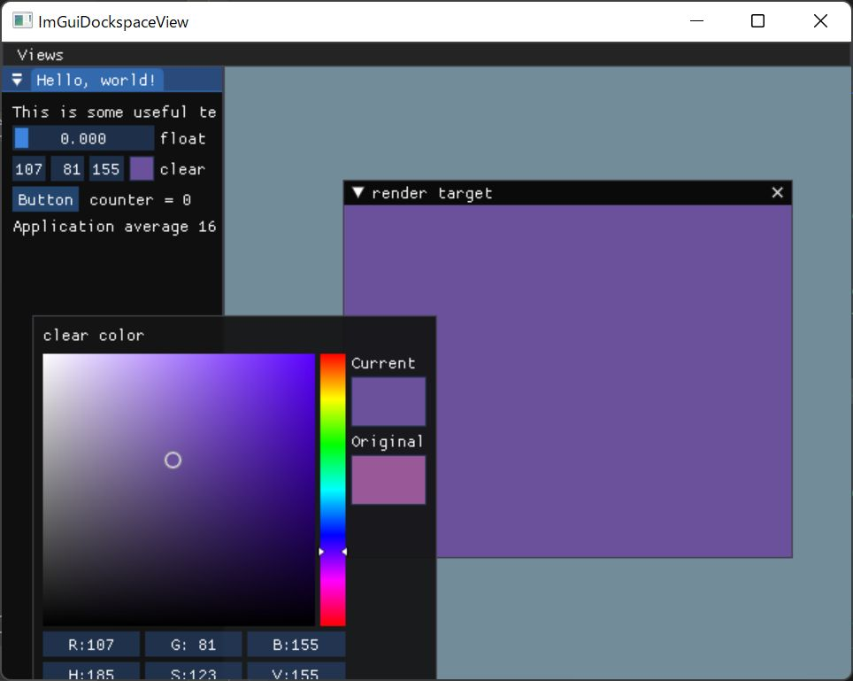

RTV from Texture¶
Dockspace の中にはめ込むために、 Texture に対して描画できるようにする。
以降の章では、RTV に対して如何に描画するかについて説明する。 RTV が backbuffer もしくは texture 由来であることを区別しない。
{kind=link}
../../samples/_Basic/ImGuiDockspaceView/main.cpp¶
#include <banana/dockspace.h>
#include <gorilla/device_and_target.h>
#include <gorilla/drawable.h>
#include <gorilla/texture_and_target.h>
#include <gorilla/window.h>
//
#include <imgui.h>
#include <imgui_impl_dx11.h>
//
#include <chrono>
#include <iostream>
#include <list>
#include <string_view>
auto CLASS_NAME = "CLASS_NAME";
auto WINDOW_TITLE = "ImGuiDockspaceView";
auto WIDTH = 640;
auto HEIGHT = 480;
template <typename T> using ComPtr = Microsoft::WRL::ComPtr<T>;
class DockSpace {
std::chrono::system_clock::time_point last = {};
std::list<banana::Dock> _docks;
public:
ImVec4 clear_color = ImVec4(0.45f, 0.55f, 0.60f, 1.00f);
gorilla::TextureAndTarget view_rt;
ImVec4 view_clear_color = ImVec4(0.6f, 0.35f, 0.60f, 1.00f);
DockSpace(const ComPtr<ID3D11Device> &device,
const ComPtr<ID3D11DeviceContext> &context) {
// Setup Dear ImGui context
IMGUI_CHECKVERSION();
ImGui::CreateContext();
ImGuiIO &io = ImGui::GetIO();
(void)io;
// io.ConfigFlags |=
// ImGuiConfigFlags_NavEnableKeyboard; // Enable Keyboard Controls
// io.ConfigFlags |= ImGuiConfigFlags_NavEnableGamepad; // Enable
// Gamepad Controls
io.ConfigFlags |= ImGuiConfigFlags_DockingEnable; // Enable Docking
io.ConfigFlags |= ImGuiConfigFlags_ViewportsEnable; // Enable Multi-Viewport
// / Platform Windows
// io.ConfigViewportsNoAutoMerge = true;
// io.ConfigViewportsNoTaskBarIcon = true;
// io.ConfigViewportsNoDefaultParent = true;
// io.ConfigDockingAlwaysTabBar = true;
// io.ConfigDockingTransparentPayload = true;
// io.ConfigFlags |= ImGuiConfigFlags_DpiEnableScaleFonts; // FIXME-DPI:
// Experimental. THIS CURRENTLY DOESN'T WORK AS EXPECTED. DON'T USE IN USER
// APP! io.ConfigFlags |= ImGuiConfigFlags_DpiEnableScaleViewports; //
// FIXME-DPI: Experimental.
// Setup Dear ImGui style
ImGui::StyleColorsDark();
// ImGui::StyleColorsClassic();
// When viewports are enabled we tweak WindowRounding/WindowBg so platform
// windows can look identical to regular ones.
ImGuiStyle &style = ImGui::GetStyle();
if (io.ConfigFlags & ImGuiConfigFlags_ViewportsEnable) {
style.WindowRounding = 0.0f;
style.Colors[ImGuiCol_WindowBg].w = 1.0f;
}
// Setup Platform/Renderer backends
// ImGui_ImplWin32_Init(hwnd);
ImGui_ImplDX11_Init(device.Get(), context.Get());
auto show_view = [&device, &context, &rt = this->view_rt, &view_clear_color = this->view_clear_color](bool *p_open)
{
ImGui::PushStyleVar(ImGuiStyleVar_WindowPadding, {0, 0});
if (ImGui::Begin("render target", p_open,
ImGuiWindowFlags_NoScrollbar |
ImGuiWindowFlags_NoScrollWithMouse))
{
auto size = ImGui::GetContentRegionAvail();
auto texture = rt.set_rtv(device, context,
static_cast<int>(size.x), static_cast<int>(size.y), &view_clear_color.x);
if (texture)
{
ImGui::BeginChild("cameraview");
ImGui::Image(texture.Get(), size);
// update
auto topLeft = ImGui::GetWindowPos();
topLeft.y += ImGui::GetFrameHeight();
auto &io = ImGui::GetIO();
if (ImGui::IsWindowFocused(ImGuiFocusedFlags_RootAndChildWindows))
{
// camera.update(io.MouseDelta.x, io.MouseDelta.y, size.x, size.y, io.MouseDown[0], io.MouseDown[1], io.MouseDown[2], io.MouseWheel);
}
if (ImGui::IsItemClicked(0) || ImGui::IsItemClicked(1) || ImGui::IsItemClicked(2))
{
std::cout << "click" << std::endl;
ImGui::SetWindowFocus();
}
// rt.hovered = ImGui::IsItemHovered();
ImGui::EndChild();
}
}
ImGui::End();
ImGui::PopStyleVar();
};
_docks.push_back({"view", show_view});
//
// initialize docks
//
// 2. Show a simple window that we create ourselves. We use a Begin/End pair
// to created a named window.
auto show_hello = [&clear_color = this->view_clear_color](bool *p_open)
{
static float f = 0.0f;
static int counter = 0;
ImGui::Begin("Hello, world!"); // Create a window called "Hello, world!"
// and append into it.
ImGui::Text("This is some useful text."); // Display some text (you can
// use a format strings too)
// ImGui::Checkbox(
// "Demo Window",
// &demo.open); // Edit bools storing our window open/close state
// ImGui::Checkbox("Another Window", &another.open);
ImGui::SliderFloat("float", &f, 0.0f,
1.0f); // Edit 1 float using a slider from 0.0f to 1.0f
ImGui::ColorEdit3(
"clear color",
(float *)&clear_color); // Edit 3 floats representing a color
if (ImGui::Button("Button")) // Buttons return true when clicked (most
// widgets return true when edited/activated)
counter++;
ImGui::SameLine();
ImGui::Text("counter = %d", counter);
ImGui::Text("Application average %.3f ms/frame (%.1f FPS)",
1000.0f / ImGui::GetIO().Framerate, ImGui::GetIO().Framerate);
ImGui::End();
};
_docks.push_back({"hello", show_hello});
}
~DockSpace() {
// Cleanup
ImGui_ImplDX11_Shutdown();
// ImGui_ImplWin32_Shutdown();
ImGui::DestroyContext();
}
void update(const ComPtr<ID3D11DeviceContext> &context,
const gorilla::ScreenState &state) {
//
// update custom backend
//
ImGuiIO &io = ImGui::GetIO();
if (last == std::chrono::system_clock::time_point{}) {
} else {
io.DeltaTime = std::chrono::duration_cast<std::chrono::milliseconds>(
state.time - last)
.count() *
0.001f;
}
if (io.DeltaTime == 0) {
io.DeltaTime = 0.016f;
}
last = state.time;
io.DisplaySize = {state.width, state.height};
io.MousePos = {state.mouse_x, state.mouse_y};
io.MouseDown[0] = state.mouse_button_flag & gorilla::MouseButtonLeftDown;
io.MouseDown[1] = state.mouse_button_flag & gorilla::MouseButtonRightDown;
io.MouseDown[2] = state.mouse_button_flag & gorilla::MouseButtonMiddleDown;
io.MouseWheel = state.wheel;
// Start the Dear ImGui frame
ImGui_ImplDX11_NewFrame();
// ImGui_ImplWin32_NewFrame();
ImGui::NewFrame();
dockspace(_docks);
// Rendering
ImGui::Render();
}
void render() { ImGui_ImplDX11_RenderDrawData(ImGui::GetDrawData()); }
};
int WINAPI WinMain(HINSTANCE hInstance, HINSTANCE hPrevInstance,
LPSTR lpCmdLine, int nCmdShow) {
UNREFERENCED_PARAMETER(hPrevInstance);
UNREFERENCED_PARAMETER(lpCmdLine);
gorilla::Window window;
auto hwnd = window.create(hInstance, CLASS_NAME, WINDOW_TITLE, WIDTH, HEIGHT);
if (!hwnd) {
return 1;
}
ShowWindow(hwnd, nCmdShow);
UpdateWindow(hwnd);
gorilla::DeviceAndTarget renderer;
auto [device, context] = renderer.create(hwnd);
if (!device) {
return 2;
}
//
// main loop
//
DockSpace gui(device, context);
gorilla::ScreenState state;
for (UINT frame_count = 0; window.process_messages(&state); ++frame_count) {
gui.update(context, state);
// draw
renderer.begin_frame(state, &gui.clear_color.x);
gui.render();
renderer.end_frame();
}
return 0;
}
課題
マウスイベントのハンドリング